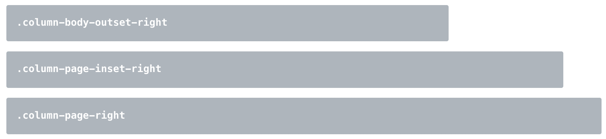

Quarto (от латинского quārtō)1 — это книга или брошюра, изготовленная из полных листов, напечатанных с восемью страницами текста, по четыре на одну сторону, а затем сложенных дважды, чтобы получить четыре листа.
Слева показан пример кварто-книги.
Содержание
1. Обзор Quarto и примеры
2. Как начать работу в Quarto?
3. Структура документов в Quarto
4. Возможности для интернет-публикации
5. Дополнительные материалы по Quarto
6. Выводы
Quarto
Quarto® — это научно-техническая издательская система с открытым исходным кодом, построенная на основе Pandoc и использующая Markdown для разметки.
Pandoc — универсальный конвертер для работы с текстовыми документами для форматирования научных и технических текстов, поддерживающий более 40 различных форматов.
Quarto CLI — это интерфейс командной строки, который преобразует обычные различные форматы (.md, .rmd, .qmd или .ipynb / Jupyter notebook) в статические отчеты PDF / Word / HTML, интерактивные книги, веб-сайты, блоги, презентации и многое другое.
Метаданные могут быть включены в Quarto-документ с помощью YAML либо в преамбуле в начале файла, либо отдельным _quarto.yml-файлом.
С помощью YAML мы задаем, например, название документу, дату, автора, устанавливаем те параметры, которые необходимы при рендеринге документа, чтобы не писать их в командной строке и т.д.
| Справа | Слева | По умолчанию | По центру |
|-------:|:------|--------------|:---------:|
| 12 | 12 | 12 | 12 |
| 123 | 123 | 123 | 123 |
| 1 | 1 | 1 | 1 |
Вывод
Справа
Слева
По умолчанию
По центру
12
12
12
12
123
123
123
123
1
1
1
1
Формулы в Quarto
Математические формулы в Quarto используют разделители $ для встроенных математических элементов текста и разделители $$ для выносной математики на основе LaTeX-синтаксиса.
Выносные блоки
Заметка
Этот элемент будет использоваться для заметок.
Замечание
Этот элемент будет использоваться для важных замечаний.
Важно
Этот элемент будет использоваться для предупреждений.
Предостережение
Этот элемент будет использоваться для предостережений.
Совет
Этот элемент будет использоваться для рекомендаций и советов.
Выносные блоки
:::{.callout-note}## Заметка Этот элемент будет использоваться для заметок.:::
:::{.callout-caution appearance="simple"}## ВажноЭтот элемент будет использоваться для предупреждений.:::
:::{.callout-warning icon=false}## ПредостережениеЭтот элемент будет использоваться для предостережений.:::
Расширенные макеты
В случае, если содержимое выходит за пределы области основного текста, его можно продолжить, используя правую и левую версии столбцов основного текста, страницы и экрана для компоновки содержимого. Например, как ниже:
Примеры параметров для определения содержимого, выходящего за фиксированную ширину справа:

Диаграммы
Вставка диаграмм – еще одно ноу-хау в Quarto, имеющее встроенную поддержку Mermaid и Graphviz диаграмм. Это позволяет создавать блок-схемы, диаграммы последовательностей, диаграммы состояний, диаграммы Ганта и многое другое, используя синтаксис обычного текста, вдохновленный markdown.
Ячейки с исполняемым кодом
Исполняемый код записывается в специальные блоки (ячейки), в начале которых указывается язык программирования для выделения.
Если мы хотим сделать код неисполняемым – нужно поставить точку перед указанием языка программирования.
Используйте Netlify, если вам нужна поддержка пользовательских доменов, аутентификации, предварительного просмотра ветвей и других более продвинутых возможностей.
Публикуйте контент на основе исходного кода, управляемого в репозитории GitHub. Используйте страницы GitHub, когда исходный код вашего документа или сайта размещен на GitHub.
Служба публикации документов, веб-сайтов и книг Quarto. Используйте Quarto Pub, если вам нужен бесплатный, простой в использовании сервис для общедоступного контента.
Контент, отображаемый с помощью Quarto, использует стандартные форматы (HTML, Pdf, MS Word и т.д.), которые могут быть опубликованы где угодно. Используйте это, если один из описанных выше методов не соответствует вашим требованиям.
Quarto отлично подходит для публикации статей на сайтах, в блогах, а также отчетов в PDF, Word и в других форматах учеными, исследователями данных, студентами, может использоваться в образовательных целях.
Работа с большими проектами (например, книгами), кэширование, freeze.
Простота перехода от одного формата вывода документа к другому.
Возможность включения математических \(\LaTeX\)-формул в Word-документ, диаграмм.
Организация цитирования (как в визуальном редакторе, так и организация ссылок через \(BibTEX\), CiteDrive и т.д.).
Встраивание LearningApps-элементов для организации самотестирования в учебном процессе.
Автоматизация рутинных процедур с помощью проектно-ориентированных рабочих процессов с GitHub Actions и поддержка Quarto внутри контейнера Docker для обслуживания HTML-документов и проектов.
Что еще кроме Quarto?
R Markdown предлагает большой выбор библиотек для работы с документами, отчетами, презентациями и дэшбордами, например, bookdown и blogdown. У части библиотек R нет аналогов в Quarto: pagedown, flexdashboard, learnr. Об эквивалентах библиотек можно почитать на странице сравнения.